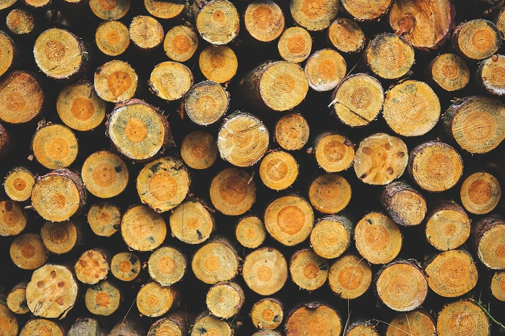

口コミ
行ってみたい声
お店の名前を知った人が、こんなふうに思うかもしれない。そんな声を制作側が創作しました。
以下は制作側が考えた創作のイメージ例で、実在のお客様の投稿ではありません。実際の口コミ・評価とは関係ありません。
営業時間などが分かったら、行ってみたいです。それまでは、Instagramの更新を楽しみにしています。
いつか近くへ出かける機会があれば、立ち寄ってみたいです。まずはInstagramをのぞいて、お店のことを知っていきたいです。
パンが好きなので、このお店のことを知りたいです。行ける日を考えながら、Instagramを見て楽しみにしたいです。
